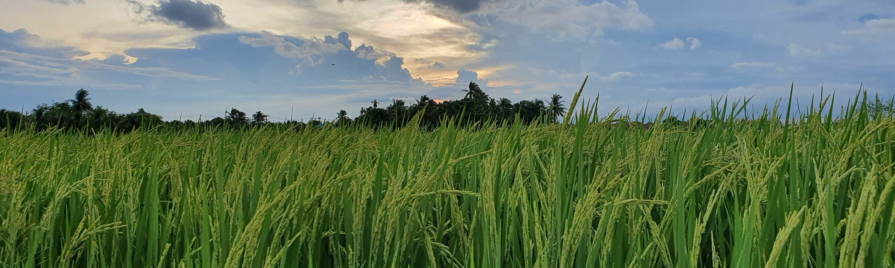
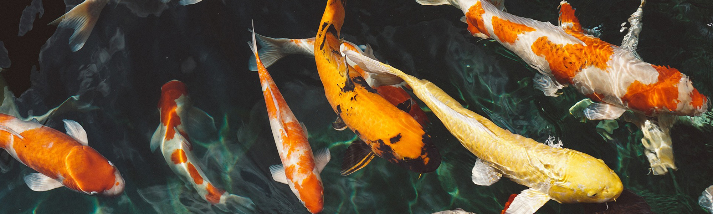
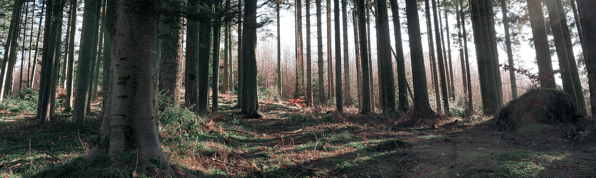
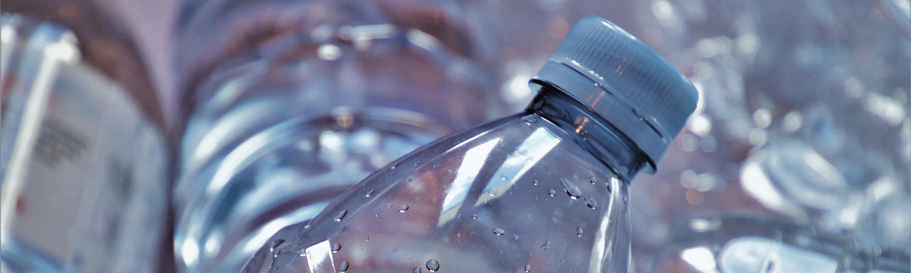

> ESG경영 > 환경경영
환경경영
맑은 공기와 청정한 자연수,
술 빚는 정성과 자연이 어우러진 국순당
Environment
좋은 술은 좋은 자연이 빚기에
우리 술을 빚는 재료들이 더 깨끗하게 자라날 수 있도록
국순당은 전통주 업계 최초로 환경부에서 지정한 녹색기업으로
선정되면서 국내 최고의 로하스 주류기업으로 자리매김하고 있습니다.
-
- 생쌀발효법
- 
- 친환경 제조 공법
- 생쌀발효법은 원료 증자 시 발생하는 이산화탄소 발생량을 줄일 수 있는 친환경 제조 공법입니다. 술을 만들고 남은 찌꺼기는 동물 사료 및 퇴비로 사용 하고 있습니다.
- 생태연못
- 
- 수질 관리
- 2급수라는 엄격한 기준으로 폐수를 처리하여, 폐수만으로 공장 내 생태연못을 조성하였습니다. 청정지역 환경관리 기준치보다 훨씬 엄격하고 강화된 자체기준을 지키고 있는 국순당은 우리의 아름다운 자연까지 보호하고 있습니다.
- 국순당 숲
- 
- 환경 정화 활동
- 강원도 횡성 청태산 내 3만평 규모의 녹지공간을 ‘국순당 숲’으로 조성해 관리하고 있으며, 주천강 및 횡성공장 주변에 분포하고 있는 생태계 교란 외래식물을 제거하여 토종식물의 성장을 보호하고 생물 다양성을 확보하고자 노력하고 있습니다.
- 용기 경량화
- 
- 친환경 공정 도입
- 전통주업계 최초로 공병 재사용을 시행하고 있습니다. 용기 경량화를 통해 투입 자원을 적게 하고, 운반/보관의 효율성을 높여 탄소 소비를 최소화하고 있습니다.
수질 관리기준 및 배출농도
| 구분 | 부유물질(SS) | 수질 | 총 질소(T-N) | 총 인(T-P) |
|---|---|---|---|---|
| 배출규제기준 | 40 | 6급수 이하 | 30 | 4 |
| 당사관리기준 | 5 | 2급수 | 15 | 2 |
안흥지역이 상수도 보호구역인 청정지역에 인접한 점을 감안하여 3단계 고도처리공정 외에도 완벽성을 기할 수 있도록 유입되는 원수에 대한 실시간 오염농도 자동분석시스템(COD 자동분석기)을 설치 운영하고 있으며, 만약의 사고에 대비해 비상조 및 2단계 중간처리 수조 등도 갖추고 있습니다. 또한 모든 처리수는 물고기가 서식하는 생태연못을 통해 방류함으로써 단 한 순간이라도 환경사고가 발생되지 않도록 감시, 운영하고 있습니다.